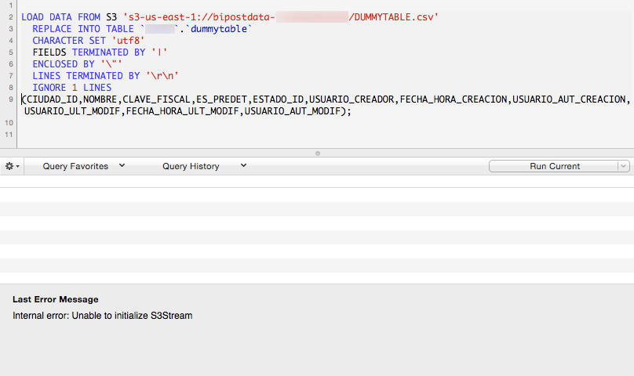

Troubleshooting¶
When you use manual sync and it is completed successfully, the following dialog appears.

If you face any errors, try looking here.
Syntax error¶
Misspelled fields or tables on customData.json may appear as:
No Internet Connection¶
When no internet connection available, the following message appears:

Firewall Restrictions¶
If your internet connection has a firewall, it may show different errors like:
- The remote name could not be resolved.
- A WebException with status SendFailure was thrown.
- A WebException with status NameResolutionFailure was thrown.
- Error making request with Error Code ExpectationFailed and Http Status Code ExpectationFailed.

Grant Firewall to reach Amazon S3¶
Create a policy to Allow to:
54.230.0.0/1552.192.0.0/11

AWS can have multiple IP addresses for S3 service, so in case the above IP's don't work check the AWS Public IP Address Ranges documentation and look for
"region": "GLOBAL",
"service": "AMAZON"
and
"region": "us-east-1",
"service": "AMAZON"
https://ip-ranges.amazonaws.com/ip-ranges.json
No information to Sync¶
If No information to Sync message appears, verify that customData.json is set to send at least one table.
Waiting time¶
Bipost Sync may take from a few seconds to several minutes to extract from on-prem DB and upload to AWS. While this is happening no messages/icons will show that biPost.exe is working and maybe you'll see (Not responding) on the top of the window, this is normal.
If you launch Windows Task Manager probably you'll see that biPost.exe *32 is running and consuming a considerable amount of CPU.
Once the information is uploaded to AWS, it usually is available on Aurora-MySQL very fast. If a big data set was uploaded it may take up to 5 minutes to be available on Aurora.
If you need to check which tables where loaded, check aurora_s3_load_history.
Upload Limit¶
Depending on the number of rows and columns on each table, it is possible that a large amount of data sent on a single sync may not load to Aurora-MySQL.
We have tested up to 1.5 million rows on a single sync and works fine.
We recommend using Recursive Sync for big tables that have a datetime field available.
Special Characters¶
Some special characters on char and varchar fields are not supported and thus removed by biPost.exe
For example:
- Enter
- ()
On SQL Server, all special characters on strings of 100 length or more are removed, leaving only letters and numbers.
Schema Limitations¶
NULLvalues on char and varchar are converted to''on MySQL.NULLvalues on float, money and int datatypes are converted to value0(zero) on MySQL.NULLvalues on datetime are converted to0000-00-00 00:00:00on MySQL.bitdatatype is converted toVARCHAR(1)on MySQL.- Tables without a
PRIMARY KEYwill display an error message.
AppData\Local folder¶
Sometimes it is necessary to manually delete the content of \AppData\Local\biPost folder.
Open a new Windows Explorer and enter %localappdata%\bipost. Select all and delete.
************** Exception Text **************
System.IO.IOException: The process cannot access the file '012a3b4c-56d7-8ef9-0123-456789a012bc_post.zip' because it is being used by another process.
MySQL schemas are created but no data is loaded¶
Two things might be causing this problem:
1. RDS instance cannot reach S3 bucket.¶
When we look at our CloudWatch logs, we see Unable to initialize S3Stream, so do the following:
-
Check if your IAM Policy to Grant Access to S3 is set correctly using the S3 bucket ARN we provided. Also double check the policy document (JSON).
-
Check that IAM Role has attached the former IAM Policy. Copy ARN Role to a notepad for next steps.
-
Go to RDS Parameter Groups, select the cluster group and click Compare Parameters, it should show the IAM ARN Role (the one you just copied on a notepad) on the parameters shown here.
-
Go to RDS Clusters and check if IAM Role is listed and active for your cluster.
-
Double check IAM roles attached to your instance querying
show global variables like '%role%'

After this, if you still experience this error, check out Manually debugging S3Stream.
2. Name of your destination database must be all lower case.¶
When we look at our CloudWatch logs, we see:
SequelizeConnectionError: ER_BAD_DB_ERROR: Unknown database
Double check that your DB name is all lower case.
Manually debugging S3Stream¶
In this section we will manually upload data to Aurora-MySQL. The goal here is to see whether an error is shown while directly importing data from S3 to Aurora-MySQL.
Using MySQL Workbench (or any client of your preference), open a connection to your MySQL instance preferably using root account.
Syntax
LOAD DATA FROM S3 's3-us-east-1://{my-bucket-name}/{my-36-digit-service-number}/process_{my-36-digit-service-number}{YYYY_M_D-of-yesterday}_post/{my-example-table}.csv'
REPLACE INTO TABLE `{my-database-name}`.`{my-example-table}`
CHARACTER SET 'utf8'
FIELDS TERMINATED BY '|'
ENCLOSED BY '\"'
LINES TERMINATED BY '\r\n'
IGNORE 1 LINES
({column_1},{column_2},...,{column_n});
Replace curly brackets with your data.
Parameters
- my-bucket-name: Name of your dedicated bucket, assigned by Factor BI.
- my-36-digit-service-number: Number assigned to your service.
- YYYY_M_D-of-yesterday: Date for yesterday on GMT America/Mexico_City.
- my-example-table: Pick any of the tables that you are synchronizing.
- my-database-name: Name of your destination DB on MySQL.
- {column_1},{column_2},...,{column_n}: List all the columns in the same order as they appear in the .CSV file created on AppData\Local folder.
Example
LOAD DATA FROM S3 's3-us-east-1://bipostdata-f0123abc4567/a1bcd23e-4fa5-67b8-cd9e-f0123abc4567/process_a1bcd23e-4fa5-67b8-cd9e-f0123abc45672017_9_13_post/CLIE.csv'
REPLACE INTO TABLE `mytestdb`.`clie`
CHARACTER SET 'utf8'
FIELDS TERMINATED BY '|'
ENCLOSED BY '\"'
LINES TERMINATED BY '\r\n'
IGNORE 1 LINES
(CLAVE,STATUS,NOMBRE,RFC,CALLE,NUMINT,NUMEXT,CRUZAMIENTOS,CRUZAMIENTOS2,COLONIA,CODIGO,LOCALIDAD,MUNICIPIO,ESTADO,NACIONALIDAD,REFERDIR,TELEFONO,CLASIFIC,FAX,PAG_WEB,CURP,CVE_ZONA,IMPRIR,MAIL,NIVELSEC,ENVIOSILEN,EMAILPRED,DIAREV,DIAPAGO,CON_CREDITO,DIASCRED,LIMCRED,SALDO,LISTA_PREC,CVE_BITA,ULT_PAGOD,ULT_PAGOM,ULT_PAGOF,DESCUENTO,ULT_VENTAD,ULT_COMPM,FCH_ULTCOM,VENTAS,CVE_VEND,CVE_OBS,TIPO_EMPRESA,MATRIZ,PROSPECTO,CALLE_ENVIO,NUMINT_ENVIO,NUMEXT_ENVIO,CRUZAMIENTOS_ENVIO,CRUZAMIENTOS_ENVIO2,COLONIA_ENVIO,LOCALIDAD_ENVIO,MUNICIPIO_ENVIO,ESTADO_ENVIO,PAIS_ENVIO,CODIGO_ENVIO,CVE_ZONA_ENVIO,REFERENCIA_ENVIO,CUENTA_CONTABLE,ADDENDAF,ADDENDAD,NAMESPACE,METODODEPAGO,NUMCTAPAGO,MODELO,DES_IMPU1,DES_IMPU2,DES_IMPU3,DES_IMPU4,DES_PER,LAT_GENERAL,LON_GENERAL,LAT_ENVIO,LON_ENVIO,UUID,VERSION_SINC,USO_CFDI,CVE_PAIS_SAT,NUMIDREGFISCAL,FORMADEPAGOSAT);

LOAD FROM S3 privileges¶
The Aurora user that executes LOAD DATA FROM S3 requires the following privilege:
GRANT LOAD FROM S3 ON *.* TO 'your-user-name';
By default this privilege is set to your Master Username when you created your Aurora instance.
If you are using a different user and the privilege is not set, the following error appears:
Access denied; you need (at least one of) the LOAD FROM S3 privilege(s) for this operation
The only way to see this error is executing LOAD FROM S3 manually.
If your MySQL user already has this privilege and you see the following error, try these steps.
Access denied for user 'your-user-name'@'xx.xx.xxx.xxx' (using password: YES)
Firebird column name starts with underscore¶
Firebird SQL does not naturally support creating a column starting with underscore, so avoid that on Aurora if your source DB is Firebird.
Token unknown - line 1
Need more help?¶
Please send us an email to: info@factorbi.com